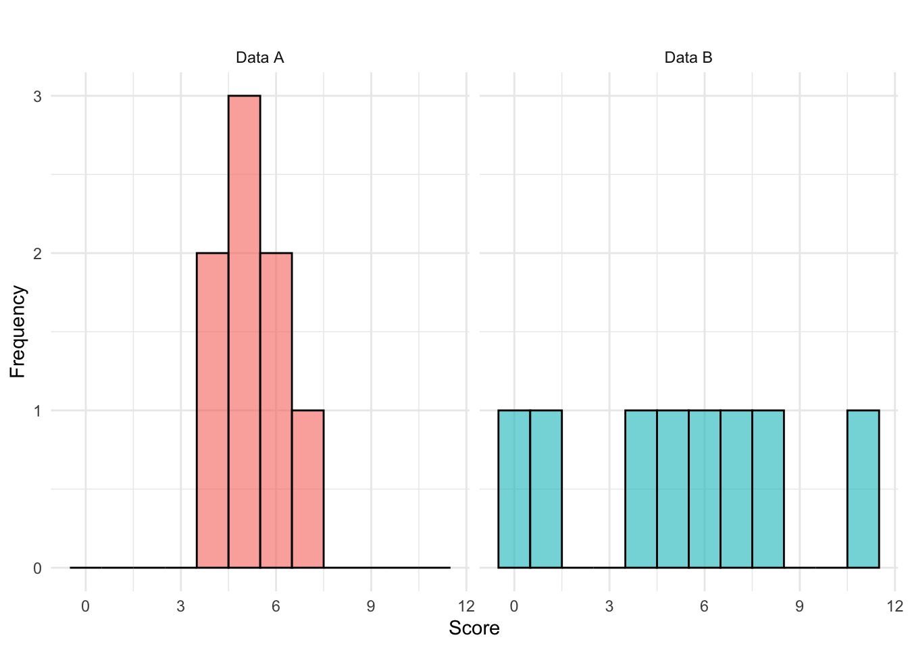
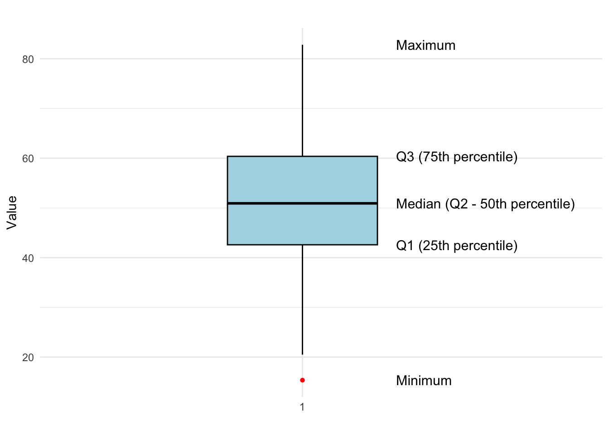
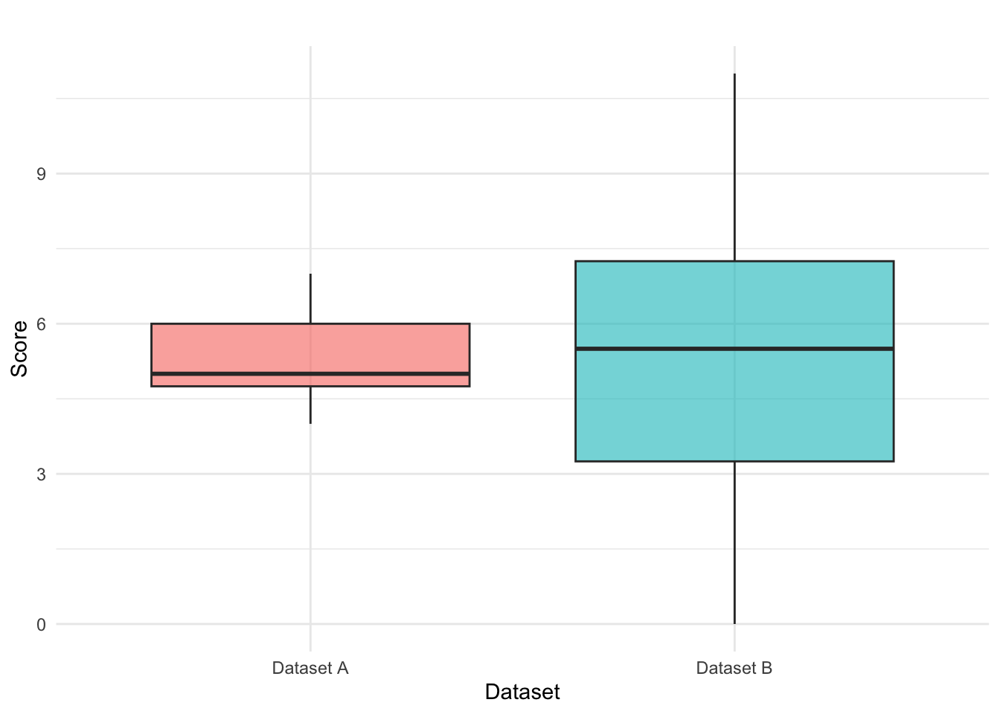
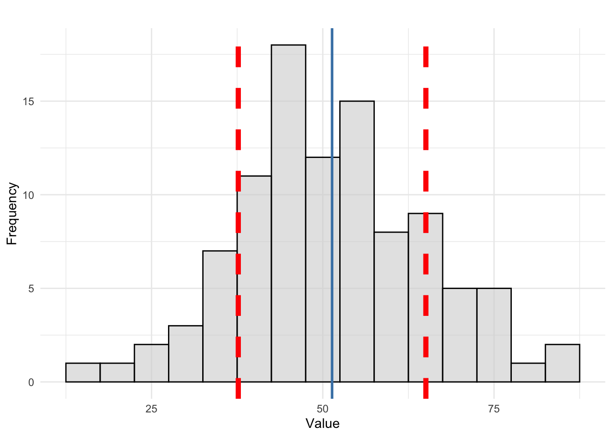
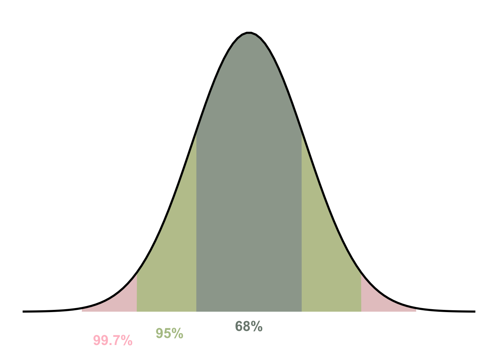
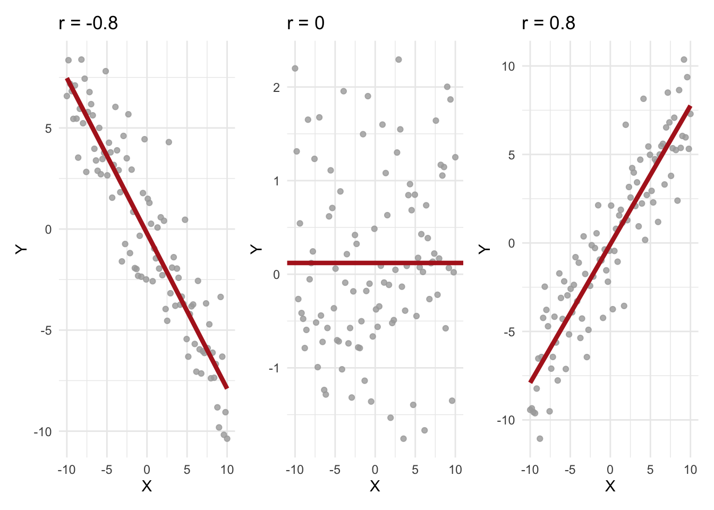

6 Measures of Dispersion
While measures of central tendency, such as the mean or median, provide valuable insight into the typical value in a data set, they often do not tell the whole story. Two data sets can have the same mean but exhibit vastly different distributions. This is where measures of dispersion become crucial, as they describe the spread or variability in a data set.
Measures of dispersion quantify how much the observations in a data set differ from each other. They help answer questions such as:
- Do most values cluster around the mean, or are they spread out widely?
- How much variability exists within the data?
- Are there extreme values that influence the distribution?
Dispersion measures require numerical data and are essential for understanding the reliability and consistency of a data set.
Example: Test Scores
Consider two sets of scores from two different groups of students. Each data set contains eight observations, representing the scores students received on a test:
Data A
4 4 5 5 5 6 6 7Data B
0 1 4 5 6 7 8 11Both data sets have the same mean: \[\bar{x}_A = \frac{4 + 4 + 5 + 5 + 5 + 6 + 6 + 7}{8} = 5.25\] \[\bar{x}_B = \frac{0+1+4+5+6+7+8+11}{8} = 5.25\]
However, data set B has a much wider spread of values, ranging from 0 to 11, while data set A is more compact, with values between 4 and 7. The greater spread in data set B suggests higher variability in scores, meaning individual performances were less consistent compared to data set A. In contrast, data set A shows more uniform performance, suggesting students’ scores were relatively close to each other. The two data set distributions are visualized below:
Several statistical measures help quantify dispersion in a dataset, some of which are covered in the following.
6.1 Quartiles and Percentiles
Quartiles and percentiles divide data into sections, helping us understand the distribution more effectively. The most commonly used quartiles are the first quartile (Q1), median (Q2), and third quartile (Q3).
First Quartile (Q1) - 25th Percentile
The first quartile (Q1) marks the value below which 25% of the observations fall. It helps us understand the lower range of the dataset and is computed as: \[ Q1 = \text{value at position } 0.25(n+1) \] where \(n\) is the total number of observations.
Second Quartile (Q2) – 50th Percentile (Median)
The second quartile (Q2) is simply the median, dividing the dataset into two equal halves. This is calculated as: \[ Q2 = \text{value at position } 0.50(n+1) \] Since 50% of values are below this point, the median represents the central value in the distribution.
Third Quartile (Q3) - 75th Percentile
The third quartile (Q3) is the value below which 75% of the observations fall. This is particularly useful for understanding the upper range of the dataset and is calculated as: \[ Q3 = \text{value at position } 0.75(n+1) \]
Quartiles provide valuable information about how data is spread across different sections. They allow us to:
- Identify skewness: If Q1 and Q3 are unevenly spaced around Q2 (the median), the data may be skewed.
- Detect outliers: Any value that is significantly lower than Q1 or higher than Q3 can be considered an outlier.
- Calculate the Interquartile Range (\(IQR\)), which is the difference between Q3 and Q1, providing a robust measure of spread that is less sensitive to extreme values (not to be confused with range which is the difference between minimum and maximum observation values \(x_{max}-x_{min}\)).
- Calculate the Quartile Deviation which is another measure that is robust against extreme values and defined as half the difference between the third quartile (Q3) and the first quartile (Q1): \[\frac{Q3-Q1}{2} .\]
6.2 Five-Number Summary and Boxplot
A Five-Number Summary is a set of five descriptive statistics that provide insights into the distribution of a data set. These include:
- Minimum – The smallest observed value.
- First Quartile (Q1) – The 25th percentile, below which 25% of the data falls.
- Second Quartile (Median, Q2) – The 50th percentile, the middle value of the data set.
- Third Quartile (Q3) – The 75th percentile, below which 75% of the data falls.
- Maximum – The largest observed value.
The Five-Number Summary helps in constructing a boxplot, which visually represents the spread and skewness of the data, as well as potential outliers. An example is shown in Figure 6.1.
The boxplot visually represents the distribution and spread of the data using the five-number summary. The minimum and maximum values mark the range of the data, while the first quartile (Q1), median (Q2), and third quartile (Q3) divide the data into four equal parts. The interquartile range (IQR), which spans from Q1 to Q3, highlights the middle 50% of the data, giving insights into variability.
The median (Q2) represents the central value, while outliers (if any) are shown as red points beyond the whiskers of the box. This boxplot effectively summarizes the data set, making it easy to identify skewness, dispersion, and potential outliers at a glance.

Example: Test Scores
We compute the Five-Number Summary for the two datasets, A and B, representing test scores.
Data A
4 4 5 5 5 6 6 7Data B
0 1 4 5 6 7 8 111 and 5: The range is the difference between the maximum and minimum values (thus allowig us to see the minimum and maximum as well):
- A: (7 - 4 = 3)
- B: (11 - 0 = 11)
2: The first quartile is found at position:
\[
Q1 = 0.25(n+1) = 0.25(9) = 2.25
\]
- A: \(Q1 = 4 + 0.25(5-4) = 4.25\)
- B: \(Q1 = 1 + 0.25(4-1) = 1.75\)
3: The median is found at position:
\[
Q2 = 0.50(n+1) = 0.50(9) = 4.5
\]
- A: \(Q2 = 5\)
- B: \(Q2 = 5.5\)
4: The third quartile is found at position:
\[
Q3 = 0.75(n+1) = 0.75(9) = 6.75
\]
- A: \(Q3 = 6 + 0.75(6-6) = 6\)
- B: \(Q3 = 7 + 0.75(8-7) = 7.75\)
Final Five-Number Summaries
| Dataset | Minimum | Q1 | Median (Q2) | Q3 | Maximum |
|---|---|---|---|---|---|
| A | 4 | 4.25 | 5 | 6 | 7 |
| B | 0 | 1.75 | 5.5 | 7.75 | 11 |
To better understand the distribution of the two datasets, we use a boxplot to visualize the Five-Number Summary.

The boxplot visually highlights key aspects of dispersion, skewness, and potential outliers. In our example:
- Dataset A has a smaller range (3) and is more compact.
- Dataset B has a wider range (11), indicating greater variability in scores.
By using these descriptive statistics, we can better interpret datasets and make informed comparisons in various fields, including education, business, and research.
6.3 Variance and Standard Deviation
When analyzing data, calculating the mean provides insight into the average value of a dataset. However, to understand how spread out the data is, we need to measure its variability. This is where variance and standard deviation become essential.
Variance quantifies the average squared deviation of each data point from the mean. It provides a measure of how much the data points differ from the central value. For an entire population, the variance (\(\sigma^2\)) is calculated as: \[ σ^2 = \frac{\sum_{i=1}^{N} (x_i - \mu)^2}{N} \] where:
- \(N\) = total number of data points in the population,
- \(x_i\) = individual data points,
- \(\mu\) = population mean.
When working with a sample instead of an entire population, we use the sample variance (\(s^2\)): \[ s^2 = \frac{\sum_{i=1}^{n} (x_i - \bar{x})^2}{n-1} \] where:
- \(n\) = sample size,
- \(x_i\) = individual data points,
- \(\bar{x}\)= sample mean.
The denominator \((n-1)\) instead of \(n\) accounts for the loss of one degree of freedom, making it an unbiased estimator of population variance (we’ll return to this later).
An alternative formula for calculating sample variance can be found by noting that the sum of all deviations from the mean is zero: \(\sum_{i=1}^{n} x_i = n\bar{x}\) so that we get \[ \sum_{i=1}^{n} x_i \bar{x} = \bar{x} \sum_{i=1}^{n} x_i = n \bar{x}^2. \] Substituting this back into original equation yields: \[ s^2 = \frac{\sum_{i=1}^{n} x_i^2 - 2n\bar{x}^2 + n\bar{x}^2}{n-1} = \frac{\sum_{i=1}^{n} x_i^2 - n\bar{x}^2}{n-1} \] Rewriting using summation notation: \[ s^2 = \frac{n \sum_{i=1}^{n} x_i^2 - (\sum_{i=1}^{n} x_i)^2}{n(n-1)} \] This formulation simplifies calculations by hand when working with moderately large data sets.
6.4 Standard Deviation
The standard deviation is the square root of variance, bringing it back to the same units as the data, for example if measuring weight in kg, standard deviation is in kg as well. Thus, it is better to use when you need an intuitive, practical measure of data spread in real-world scenarios.
For a population, the standard deviation (\(\sigma\)) is: \[ \sigma = \sqrt{\frac{\sum_{i=1}^{N} (x_i - \mu)^2}{N}} \] For a sample, the standard deviation (\(s\)) is: \[ s = \sqrt{\frac{\sum_{i=1}^{n} (x_i - \bar{x})^2}{n-1}} \] which can also be rewritten as: \[ s = \sqrt{\frac{n \sum_{i=1}^{n} x_i^2 - (\sum_{i=1}^{n} x_i)^2}{n(n-1)}} \] following the alternative variance formula shown above.
To better understand the concept of standard deviation, we visualize the distribution of a data set in Figure 6.2 where the mean (blue) and standard deviation bands (red) are overlayed.

Example: Test Scores
Returning to our example on test scores, we previously calculated the sample mean as \(\bar{x} = 5.25\). Now, we compute the variance (\(s^2\)) for each data set: \[ s^2_A = \frac{(4−5.25)^2 + (4−5.25)^2 + \dots + (7−5.25)^2}{8-1} \approx 1.074 \] \[ s^2_B = \frac{(0−5.25)^2 + (1−5.25)^2 + \dots + (11−5.25)^2}{8-1} \approx 13.071 \]
The standard deviation (\(s\)) is then simply the square root of the variance: \[ s_A = \sqrt{1.071} \approx 1.035 \] and \[ s_B = \sqrt{13.071} \approx 3.615 \] We see that for data set A, the standard deviation is 1.035, indicating that most scores are relatively close to the mean (5.25), while for data set B, the standard deviation is 3.615, suggesting a wider spread of scores and greater variability. This comparison shows that data set B has a significantly higher variability than data set A, meaning the scores are more dispersed from the average.
6.5 The Empirical Rule
The Empirical Rule, also known as the 68-95-99.7 Rule, describes how data is distributed in a normal (bell-shaped) distribution. It states that for a large population following a normal distribution:
- Approximately 68% of all observations lie within one standard deviation from the mean (\(\mu ± 1\sigma\)).
- Approximately 95% of all observations lie within two standard deviations from the mean (\(\mu ± 2\sigma\)).
- Nearly all observations (99.7%) lie within three standard deviations from the mean (\(\mu ± 3\sigma\)).
This rule helps us understand the probability of an observation falling within a given range and is widely used in quality control, finance, and science to assess variability and expected outcomes. It is particularly useful when analyzing data distributions. If data follows a normal distribution most values cluster around the mean, and extreme values are rare. This also means that outliers can be identified if they fall beyond 3 standard deviations from the mean.
The empricial rule is visualized in Figure 6.3 showing the percentages of data falling within each standard deviation range.

6.6 Covariance and Correlation
When analyzing data, it is often important to understand the relationship between two variables. Measures such as covariance and correlation help quantify the degree to which two variables change together, allowing us to assess their association.
Covariance measures the direction of the linear relationship between two variables, \(X\) and \(Y\). It tells us whether an increase in one variable is associated with an increase or decrease in the other. For an entire population, the covariance is calculated as: \[ Cov(X, Y) = \sigma_{xy} = \frac{\sum_{i=1}^{N} (x_i - \mu_x)(y_i - \mu_y)}{N} \] where:
- \(N\) = total number of observations,
- \(x_i, y_i\) = individual data points,
- \(\mu_x \mu_y\) = means of \(X\) and \(Y\).
For a sample, we estimate covariance using: \[ Cov(X, Y) = s_{xy} = \frac{\sum_{i=1}^{n} (x_i - \bar{x})(y_i - \bar{y})}{n - 1} \] where:
- \(n\) = sample size,
- \(\bar{x} ,\bar{y}\) = sample means of \(X\) and \(Y\).
How do we interpret the covariance?
- If we have positive covariance it means that when \(X\) increases, then \(Y\) also tends to increase (e.g., study time and exam scores).
- If we have negative covariance it means that when \(X\) increases, then \(Y\) tends to decrease (e.g., speed and time taken to reach a destination).
- If we have near zero covariance, then this indicates no significant linear relationship between \(X\) and \(Y\) (note however that it does not detect patterns where variables are related in a non-linear way e.g., quadratic or exponential relationships).
One limitation of covariance is that it depends on the units of measurement (same as for variance), making it difficult to interpret. This is where correlation comes in as it standardizes covariance by adjusting for the scales of the variables, providing a dimensionless measure that is easier to interpret. The population correlation (\(\rho\)) is given by \[ \rho = \frac{Cov(X, Y)}{\sigma_x \sigma_y} \] where \(\sigma_x,\sigma_y\) are the standard deviations of \(X\) and \(Y\). The sample correlation (\(r\)) \[ r = \frac{Cov(X, Y)}{s_x s_y} \] where \(s_x, s_y\) are the sample standard deviations. Correlation values fall within the range -1 to 1, with the following interpretations (we use sample correlation as example):
- \(r = 1\): perfect positive correlation; \(X\) and \(Y\) move together exactly in a straight line.
- \(0.8 \leq r < 1\): strong positive correlation; \(X\) and \(Y\) tend to increase together.
- \(0.5 \leq r < 0.8\): moderate positive correlation; \(X\) and \(Y\) show a noticeable increasing relationship.
- \(0 < r < 0.5\): weak positive correlation; \(X\) and \(Y\) tend to increase together, but with variability.
- \(r = 0\): no linear relationship; \(X\) and \(Y\) are not linearly related (but might be non-linearly associated).
- \(-0.5 < r < 0\): weak negative correlation; as \(X\) increases, \(Y\) tends to decrease slightly.
- \(-0.8 < r \leq -0.5\): moderate negative correlation; \(X\) and \(Y\) shown an inverse relationship.
- \(-1 ≤ r ≤ -0.8\): strong negative correlation; \(X\) and \(Y\) move in opposite directions strongly.
- \(r = -1\): perfect negative correlation; \(X\) and \(Y\) move in exactly opposite directions in a straight line.
A few examples are shown in Figure 6.4.
